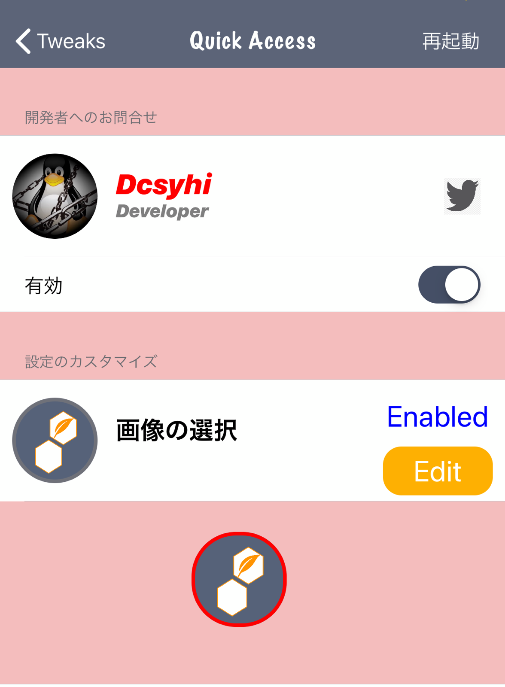
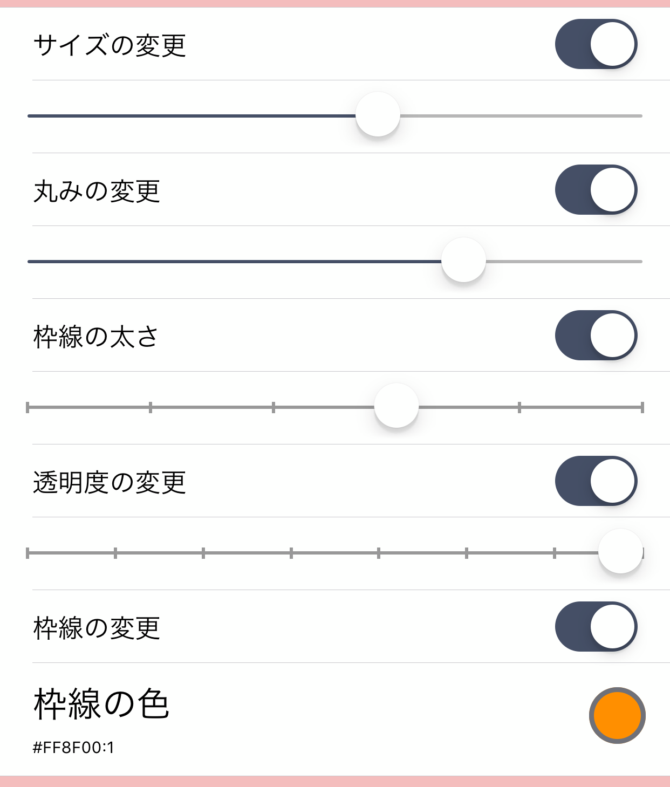
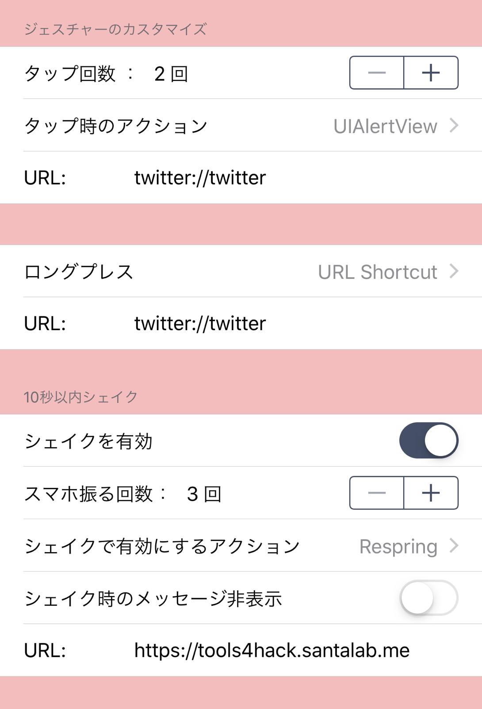

| Compatibility |
|---|
| iOS 10, 11, 12, 13(A12/arm64e) |
| Depends |
| mobilesubstrate, org.thebigboss.libcolorpicker |
| Description |
|
ショートカット類に迅速にアクセスできます。 設定したショートカットのどの画面からも 迅速にアクセスすることができます。 Quick access to shortcuts. You can quickly access from any screen of the set shortcut. |
| Images |
|



|
| Demo Video |
|
|
| How to use |
|
有効：Enabled サイズの変更：Enabled change size 丸みの変更：Enabled change radius 枠線の太さ：Enabled change border size 透明度の変更：Enabled change alpha 枠線の変更：Enabled change border color ジェスチャーカスタマイズ：Gesture customization タップ回数：Number of taps タップ時のアクション：Action on tap ロングプレス：Long press 10秒以内にシェイク：Shake within 10 seconds シェイクを有効：Enable shake スマホ振る回数：Number of shake シェイク時のアクション：Action on Shake シェイク時のメッセージ非表示：Hide message when shaking |
| Tweak Maintainer | |
|---|---|
| @linux_n1 > | |
| Lobi | @Lobi_Id > |